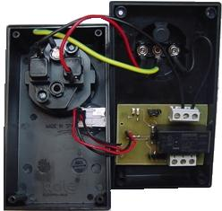
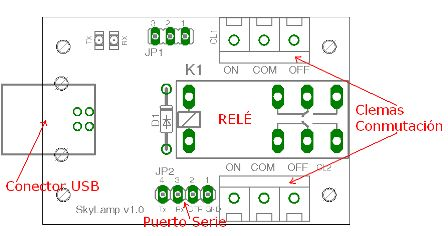
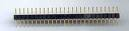
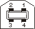

|
SkyLamp |
 |
La tarjeta SkyLamp tiene dos usos posibles, uno como conversor USB UART con niveles TTL de 5voltios y otro como un conmutador controlado por el bus USB. Uno de los objetivos ha sido desarrollar una tarjeta versatil y fácil de usar para poder encender o apagar equipos desde nuestro PC urtilizando el bus USB. Una vez cumplido este prop�sito decidimos a�adirle la posibilidad de utilizarla también como un conversor de forma que nos resultase más cómodo el reemplazo del puerto serie por el del USB. Ademas era un requisito que se pudiese usar tanto en plataformas Windows como Linux.
Compatible USB 1.1 y USB 2.0.
Tensi�n �nica de alimentaci�n proporcionada por el propio bus USB.
Descripcion del producto, numero de serie, PID y USB VID almacenados en una memoria EEPROM interna del chip FT232RL.
Disponibilidad de las se�ales Tx, Rx DTR y RTS.
Indicadores de transmisi�n y recepci�n independientes.
Para usar la SkyLamp como conmutador tenemos que conectarla al bus USB y activar el DTR o RTS seg�n configuremos el jumper JP1 en la posici�n 1-2 para el RTS
o 2-3 para usar el DTR.
Una vez que activemos o desactivemos la se�al de control el rel� actuar� sobre las clemas CL1 y CL2, donde tendremos conectado el dispositivo que deseamos
controlar.
Para usarla como conversor USB-UART tenemos que conectarla al PC mediante un cable USB y en el conector JP2 tendremos las se�ales de transmisi�n (Tx),
recepci�n (Rx), Data Terminal Ready (DTR) y la masa (GND).
En el PC nos aparecer� como un puerto serie que configuraremos como necesitemos.
Andrés Prieto-Moreno :Esquema, PCB y primeras pruebas
Ricardo G�mez Gonz�lez :Esquema, PCB y primeras pruebas
La tarjeta SkyLamp es HARDWARE LIBRE y tiene una licencia GPL (o lo mas parecido pero en versi�n Hardware). Esto quiere decir que se distribuye junto con TODOS sus esquemas (esquem�ticos, rutado y ficheros de fabricaci�n). Cualquiera tiene derecho a fabricarla, copiarla, modificarla, distribuirla o venderla siempre y cuando vaya acompa�ada de TODOS los esquemas.

| Puerto Serie | Puerto USB | |
 |
 |
|
|
|
Documentaci�n |
| Datasheet del FT232RL |
| Caracter�sticas del FT232RL. |
|
Descarga de ficheros |
| ftdi.lbr | Librer�a para el EAGLE |
| skylamp.zip | Esquem�tico de la placa en formato EAGLE |
| skylamp.pdf | Esquem�tico de la placa en PDF |
| skylamp.bmp | Esquem�tico de la placa en formato BMP |
| campus-07-skylamp.rar | Programas para usar la SkyLamp con Python |
| SkyLamp_vb.zip | Fuentes del programa de pruebas realizado en visual basic 6.0 |
Faro de la Campus Party 2007.: Enlace a la página del Wiki con información sobre el Faro de la Campus 2007.
Future Technology Devices International Ltd.: P�gina del fabricante del integrado FT232RL
24/Julio/2007: Actualizada la información con el software de Python
10/Julio/2007: Publicada la versi�n 1.0 del conversor USB-RS232
{kind=link}